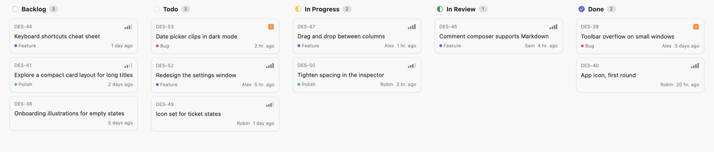

Overseer for Mac
File a ticket. Agents take it from there.
Overseer is a Mac app for the tickets your coding agents work on. File one into To Do and an agent picks it up. Follow it across the board, with its pull requests and checks, until it’s done.
To Do 1
- web #408Dark mode for the pricing page
In Progress 1
- api #405Paginate the receipts endpoint
In Review 1
- ios-app #401Haptics on the timer
Done 2
- mac-app #398Remember the window size
- ios-app #396Fix clipped onboarding copy
How it works.
-
File a ticket
Press ⌘N, pick a repository, write what you want and file it into To Do or Backlog. Tickets are GitHub issues on your organization’s project board.
-
An agent picks it up
Filing a ticket into To Do, or dragging one there, hands it to your agents. In public repositories only tickets an owner wrote are handed over.
-
Follow it on the board
A column per state: Backlog, To Do, In Progress, In Review and Done. Open a ticket to see its linked pull requests, their checks and the comments.
-
Steer it
Comment, edit, drag it to another column, restart the agents, or close and reopen it, all from the ticket.
A ticket’s morning
Write it down, then get on with your day.
At Ambi, agents implement and test most of our tickets. Overseer is where we file them and where we check on them, without opening a browser tab per issue.
-
You file a ticket
“The toggle labels in Settings clip at the largest text size.” Into To Do.
-
An agent picks it up
The card moves to In Progress. It reproduces the bug, fixes the layout and runs the tests.
-
A pull request opens
The ticket moves to In Review and shows the PR with its checks as they run.
-
You comment
“The footer under the toggles wraps too.” Click Restart Agents on the ticket and it goes back to To Do for another pass.
-
Done
Checks pass, you merge the PR and the ticket lands in Done.
Linear
Your Linear board, too.
Switch the toolbar from GitHub to Linear to see one team’s issues in a column per workflow state. Drag a card to change its state, and open it to read and add comments.
Paste a personal API key from Linear’s Settings › Security & access into Overseer’s Settings, then pick the team.

Stays out of your way.
- No backend
- Tickets are plain GitHub issues on a GitHub project board. Overseer reads and writes them with your own login.
- Uses your
ghlogin - If you’re signed in to the GitHub CLI, there’s nothing to set up. Or paste a token in Settings.
- Filter by repository
- One board for the whole organization, narrowed to a single repository from the toolbar.
- Updates itself
- Overseer checks for a new release at launch and every hour, offers it, then replaces and relaunches itself.
Install.
Download the latest build, open the DMG and drag Overseer to Applications.
Opening it the first time
Overseer isn’t notarized by Apple yet, so macOS blocks the first launch. You allow it once:
- Open Overseer from Applications. macOS says it can’t verify the app. Click Done.
- Open System Settings › Privacy & Security and scroll down to Security.
- Next to “Overseer was blocked to protect your Mac”, click Open Anyway.
- Click Open Anyway again and confirm with your password or Touch ID.
After that it opens normally, and updates install themselves.
Or build it from source. The script puts Overseer.app in ~/Applications.
git clone https://github.com/ambiapps/overseer.git
cd overseer
./scripts/build-app.sh --installYou’ll need
- macOS 15 or later
- A GitHub login with
projectscope:gh auth login, or a token pasted in Settings - A GitHub project board with Backlog, To Do, In Progress, In Review and Done columns. Set its organization and number in Settings.